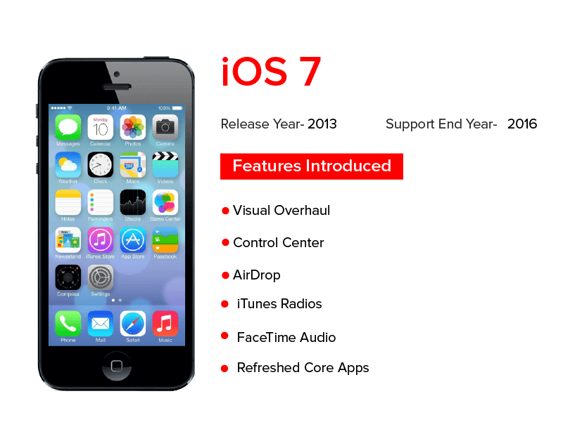

IOS For Mobile
What's happened for IOS since 2007
The computer or the mobile without the operating system are just useless pieces of metal. In 2007 apple introduced it's first smartphone and it's first mobile operating system. The iPhone has evolved over the past years and the ios also. Apple has introduced features in ios that many users wouldn't be able to imagine their life without like imessage, app store, facetime, siri, Icloud, apple pay…etc. We are going to have a journey with ios and it's devices from 2007 till now.
IOS1
Released in June2007, Apple’s mobile operating system version was not even called iOS back then. It was iPhone OS the FIRST iPhone OS, the exact stage where the comprehensive history of iOS started. The breakthrough that the version brought is something that is very difficult to explain to the current modern day iPhone users who have now become used to the shine of today’s iPhone and have little remembrance of where it all started. It was the time when the features like Visual Voicemail, Multi-Touch Screen, and Integration of iTunes were considered a revolutionary advancement. A set of advancements were brought around by Apple in iPhone OS 1. Now although the iOS 1 was a major breakthrough in the iOS version history, it lacked elements that would in some year become an inherent part of the operating system Photos, Calendar, Notes, Camera, Mail, support for third-party apps…etc..
IOS2
Released in July2008, a year after the iPhone became a big hit in the world, Apple released iPhone OS 2.0 to sync in with the launch of its iPhone 3G, which marked the step in the evolution of Apple iOS. The biggest feature introduced with iPhone OS 2 was the Apple App Store which came in with support for around 500 third-party and native apps. Next in line of innovations that came with iPhone OS 2 was the iOS SDK. It was with the second version of the OS when Apple provided developers with a kit to help develop iOS apps. Lastly, along with a few updates to its current offering, iPhone OS 2 started the trend of introducing a range of features that were present on other platforms, one of which was giving full support to Microsoft Exchange for calendars, contact, and push emails. Apple also introduced contact search and multiple-selection for emails with iOS 2.
IOS3
In June2009, iPhone OS 3 was released aligned with the launch of iPhone 3GS. It came along with a slew of changes which would define Apple’s iOS through the years that were to come. The changes included a new copy-paste feature, spotlight search, support for MMS in Messages app and the capability to record videos through Camera application along with push notification functionality, which was launched in the market for the first time. Another notable element of the version was its support to iPad, whose 1st generation was launched in 2010, the same time around which iPhone OS 3.2 was released. iPhone OS 3.2 set new UI paradigm for a larger screen – this was the time when skeuomorphism was introduced in the Apple world. New app designs were also introduced to incorporate the large real estate that was now present in Apple.
IOS4
The iOS that is up and active in today’s Apple ecosystem is what saw its foundations in June2010 with iOS 4. This was the stage where the complete evolution of Apple’s iOS started. It was in iOS 4 when Apple shifted its focus on giving the power of multi-tasking to its users. Features like iBooks, FaceTime, Personal Hotspot, AirPrint, and AirPlay, which sees themselves to be a prominent part of Apple devices today were debuted back in 2010 with iOS 4. Also, with iOS 4, Apple for the first time dropped support for a device, for iOS 4 was not compatible with the 1st generation iPod touch and original iPhone.
IOS5
Apple replied to the rising trend of cloud computing and wirelessness with iOS 5 in October2011. It was the first time when iCloud was launched in the Apple world along with the capability of activating iPhone wirelessly and also the feature of syncing with iTunes through Wi-Fi. Two other primal Apple features were introduced with iOS 5 in the face of Notification Center and iMessage. The one breakthrough element of iOS 5 was replacing Voice Control with a virtual assistant known as Siri. The assistant, which has come to grow in the same popularity pool as that of iPhones was now giving answers to users’ questions ina natural language over both web and OS at a beta stage.
IOS6

Announced at the Apple’s Developer Conference in 2012, the new OS version came with a number of changes along with the revamp of one major app present on the platform Maps. iOS 6 was released in September2012 when Apple dropped the support for Google Maps ; a feature that it was using since the beginning of 2007. A new revamped Maps was launched with iOS 6 which featured turn-by-turn navigations, Siri’s integration, and 3D Flyover mode. Siri which was introduced at a Beta stage in iOS 5 now saw an upgrade in iOS 6. Through the version, users could now get answers to schedules, sports scores etc. Also, users could now directly use Yelp, Twitter, and Facebook.Next in the iOS 6 additions’ list was Passbook. While still a little immature in the mobile payment sector, the app was seen collecting payment types, coupons, tickets, boarding passes, and rewards cards and everything else with a barcode in one place. There were a number of other enhancements that we saw with iOS 6, such as enhancements in the reading list, iCloud tabs, FaceTime running over cellular and a much better Apple ID integration, etc.
IOS7
Released in September2013, iOS 7 was a result of the efforts that Jony Ive took upon taking the place of Scott Forstall who parted ways with Apple following the backlash that Apple Maps received in the last update.It was the first time in Apple’s history when skeuomorphism was replaced by Flat Design which was termed to be an overly simplistic UI design founded on the idea of layering. In addition to the new design, a series of new features were added while several enhancements were brought around in existing Apple feature set. To start with, a new Control Center which allowed quick access to several apps like Wi-Fi, Do Not Disturb, Bluetooth, Sliders for brightness and volume, etc. with a swipe up from the bottom of the screen was launched. In addition to Control Center, the AirDrop functionality was also launched by Apple for the first time in iOS 7. It allowed the users to share files and media with the people around them using iOS as well. With the launch of iOS 7, the days of opening App Store to click on “update all” to update the applications were long gone. Users now got the option to choose Auto-Update without being reminded to update an application. The last prominent introduction of iOS 7 version was the Touch ID, the feature that now let the users unlock devices using only their thumbprint. In terms of enhancements, the multi-tasking ability of iOS 7 saw a massive improvement both in terms of implementation and interface. By double-clicking on the home button, the users now saw full-page previews of their active apps while it was equally easy to close them.
IOS8
While with iOS 7 brought around a massive amount of visual changes to the Apple platform, iOS 8 released in September 2014, was a refinement of the designs with a special focus on expanding the feature set and improvement in the workflows. The one impressive elements of iOS 8 were the interactivity that was now seen between iPhone/iPad and Mac computers. Users were now able to seamlessly pass around information between desktops and mobile devices. AirDrop too allowed the users to transfer files wirelessly between the device types. Users now even were able to send in messages and take calls from their Mac desktops as once limited to only mobile devices. In iOS 8, Apple for the first time added the support for third-party widgets in the Notification Center that would offer real-time information to the users, specific to the stock information, weather updates, etc. Besides these, iOS 8 was the first time Apple launched the idea of HomeKit and HealthKit in the market in addition to the Family Sharing functionalities. Siri also faced several upgradations like activation through voice command and the possibility of making iTunes purchase through Siri interface, etc. All the enhancements brought Siri closer to what Apple had envisioned in its Virtual Assistant.
IOS9
Released in September2015, iOS 9 was driven by the public demand on making the technical foundation of iOS stronger as compared to working on the design and feature side of it all. And this is just what Apple did with iOS 9. While a few features like Night Shift were added and apps like Notes app and Maps app were updated and Passbook became ‘Wallet’, the version focused mainly on solidifying the OS for the future to come. A major round of improvements was made in the line of responsiveness, stability, speed, and performance. Several iOS 9 features like Low Power Mode were launched to ensure that the performance quality remains intact for the users even in case of low battery.In addition to these, the official Public beta program was made open for the developers and users who wanted to experiment around new updates that came up in Apple.
IOS10
The major features of iOS 10 which were released in September2016 were customization and interoperability. Applications were now given the feasibility to interact with each other, allowing an app to use features of some other application, without even launching the second app. Siri also now became available for third-party app usage, while new apps were now being built in the iMessages. It was around this time when comparisons were drawn between iOS 10 and Android N. Users now had new ways to customize their entire experience ranging from deleting built-in applications to adding new effects and animations in messages – known as emojis. Maps also received a redesigned interface. The Home app now managed the HomeKit enabled accessories while Photos got introduced with an algorithmic search and media categorization known as ‘Memories’.
IOS11
Apple announced the release of iOS 11 in September2017 at the WWDC. It was the first time when ‘Files’ was launched – the app which went on to become iPad users go-to app for searching, organizing, and browsing files on their devices from the Dropbox, iCloud Drive, and Box application. A new dock feature also found itself being introduced in the users’ devices which now allowed users to open and switch applications instantly with one swipe. There was a new Drag and Drop function which allowed users to move photos, files, and text from one application to another. The Notes app too got a new feature which allowed users to search for handwriting and gave them the capability to scan and mark documents. A new prominent addition in the iOS 11 version was that of ARKit – a prominent part of the evolution of Apple iOS. It allowed the developers to introduce the power of AR to millions of the iOS devices active across the world. In terms of online payment, Apple Pay was integrated into Messages, making it easy for users to send money to their friends through messages. Apple also introduced an Apple Pay Cash Card to enable users to shop online and inside the application in addition to giving them the ease to transfer money to their personal bank accounts. In addition to these, a series of enhancements were brought in such as App Store redesign, Siri getting a new voice, Maps and Control Center setting getting introduced with a newer set of features…etc. The functionality set that iOS 11 brought along gave the mobility world new stances to draw a comparison between iOS 11 and Android O, one where iOS stood several points ahead of Android.
IOS12
The iOS 12 feature set released in September2018 came up with the intent to make devices going as back as 2013 a lot more faster and responsive. A lot was happening on the AR front in iOS 12. Users were working around AR compatible hardware for sharing experiences, object detection and image tracking functionalities were added to make apps more dynamic. Pixar was looped in to design a new file format for AR apps known as usdz – which would make it possible to experience AR through any iOS app. In addition to these, the now-famous Memoji characters were introduced for the iPhone X users for the first time. In fact, Memoji went on to become the feature that kept the weightage on iOS 12 when comparisons were drawn between iOS 12 and Android P. Group FaceTime was opened up to 32 users at once through audio or video. And keeping the focus on Digital Health intact, Apple introduced Screen Time – a feature that would show users the time they are spending on their devices interacting with applications.
IOS13
Announced at WWDC 2019, iOS 13 feature set is still on an elongation mode. Both users and developers are getting news on probable features that would make their appearance on this Fall, every passing day. But two of the biggest news attached with iOS 13 that are very concrete are – A. iPad will get its own OS – iPadOS and B. iTunes store is no longer operative. Besides these two notable changes, there are another set of enhancements and new feature additions that iOS 13 is prepared to be launched with. Ones which places them right in front of Android Q in the iOS 13 vs Android Q debate.Some of the new features that are set to be introduced in iOS 13 include :